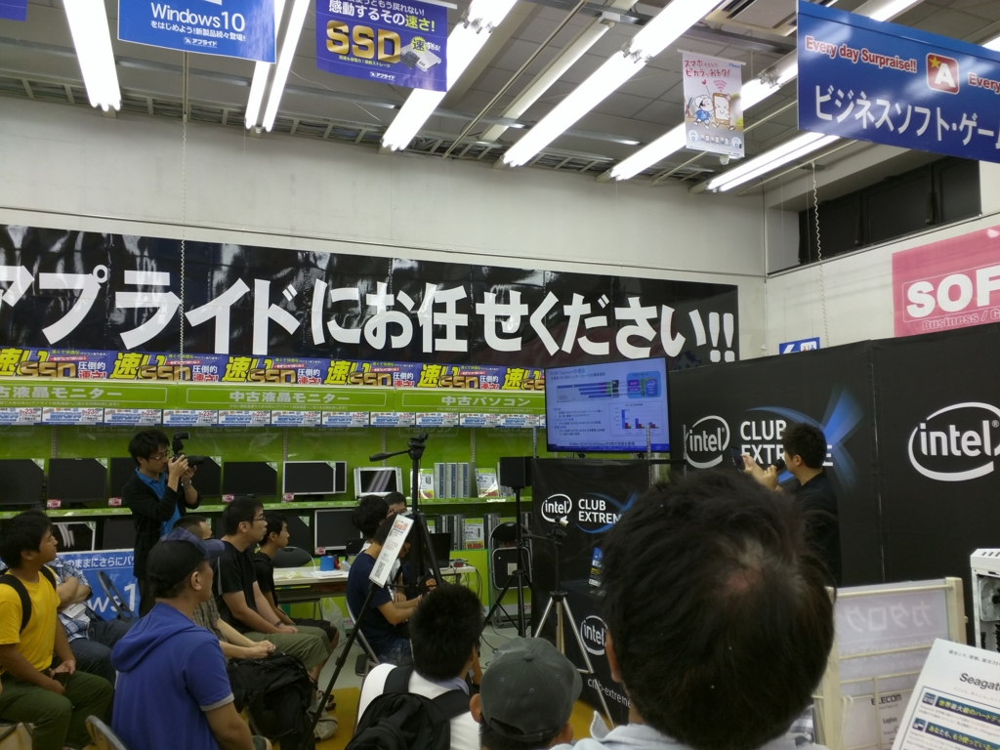
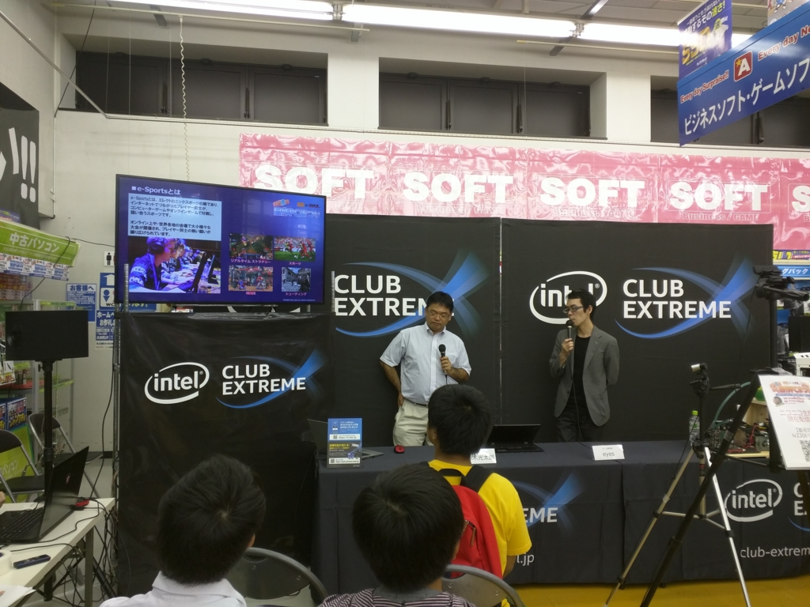
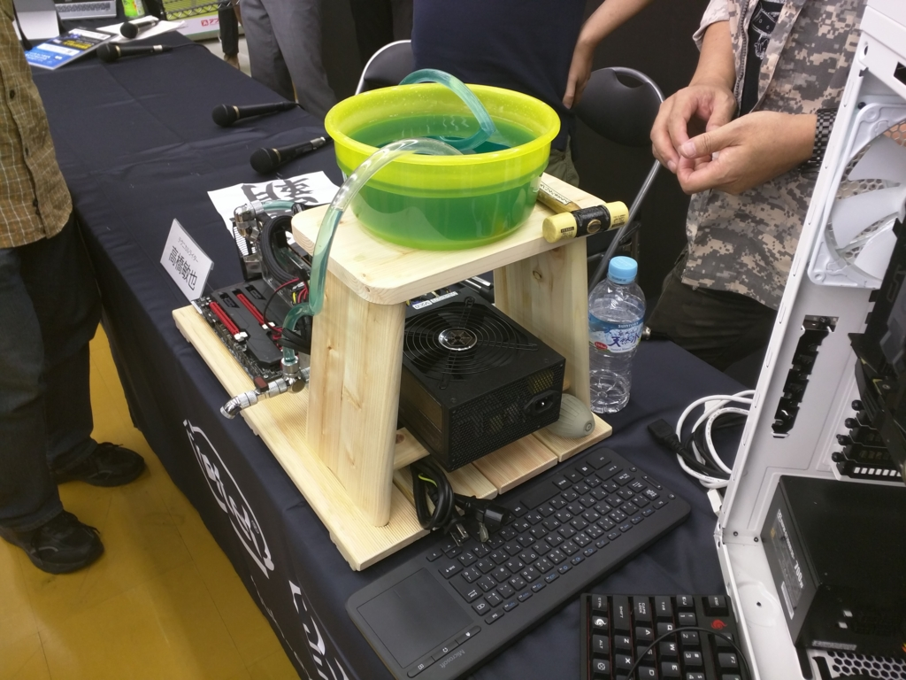
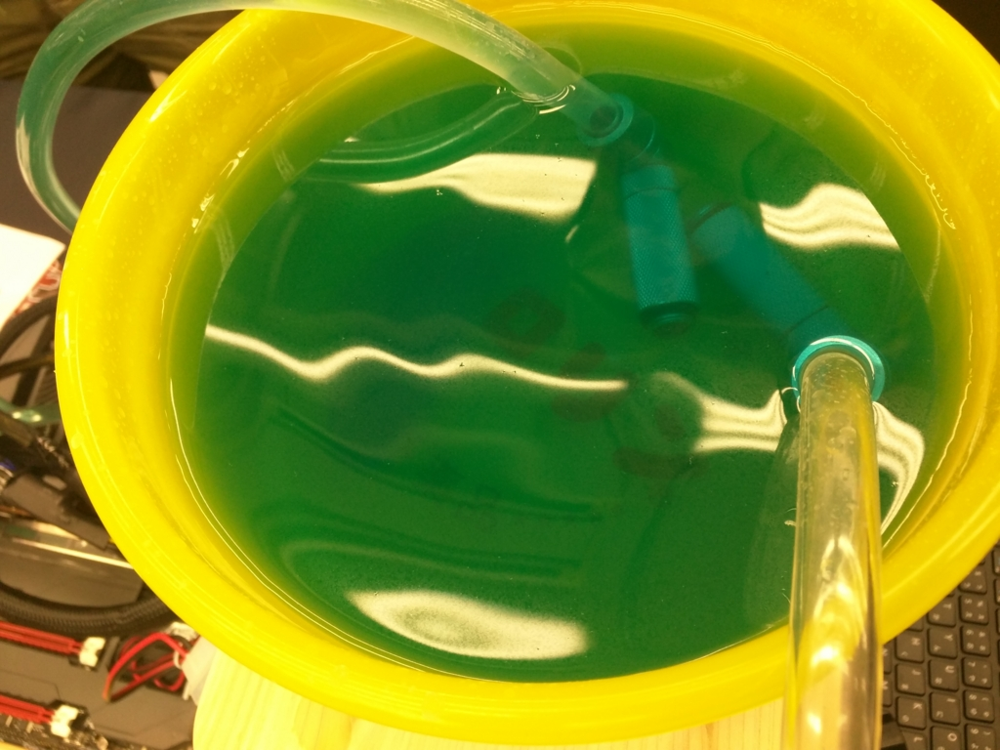

真夏の自作PCまつり in 松山 に行ってきた。
公開日：

日曜日は昼前にのそのそと起きて（艦これイベント E7 甲をクリアするので力尽きた）、「真夏の自作PCまつり in 松山」にお出かけ。もっとこじんまりしたイベントなのかと思ってたけど、割と人が集まってた。
自分が到着したころは、ちょうとインテルの中のヒト（？）による NVMe な SSD のお話。

インテル SSD 750 Series 400GB MLC 1/2 Height PCIe 3.0 NVMe SSDPEDMW400G4R5
- 出版社/メーカー: インテル
- 発売日: 2015/04/18
- メディア: Personal Computers
- この商品を含むブログ (2件) を見る
お値段すごいけど（Amazon で400GB 5.2万円）、爆速らしい。どれぐらい爆速なのかというと、普通の SSD を 6～8 個ぐらい RAID するのと同じぐらい早いらしい（そんな話だった気がする）。当日はイベント限定の激安価格で提供されていたので正直だいぶ食指が動いたけれど、さすがに1月分の食費以上をパッと使う勇気はなかった……貧乏が恨めしいわ。
もっともこの SSD、細かいファイルをばばばーっとコピーする用途ではフツーの SSD とそれほどパフォーマンスは変わらない（そんなことをライターの方が仰ってた気がする）。というわけで、ゲーマーよりもクリエーター向けなのだという。まぁ、なんでもそうだけど、向き不向きはあるよね。
最近は自作から遠ざかっていたので、CPU やら GPU の型番やコードネームを言われてもさっぱりわからん。けど、おかげでちょっとまた自作をしたくなってきた。そういえば、そろそろうちのデスクトップ PC が寿命に近づいてる気もするし。ちょうど DirectX 12 対応のビデオカードはほしかったし、電源とグラボだけ更新するのはありかも。なんか NVIDIA の GeForce GTX 950 っていうヤツを、もうちょっと待ってから買うのがよさそうみたい。
もう一つ興味をもったのは、e-Sports 関連かな。e-Sports っていうのは要するにゲーム対戦を興行化したもので、最近はプロとして食っている人もいるらしい。自分はそんなにゲームが得意じゃないのだけど、ルールさえわかっていれば観るだけでも結構面白そうだ（ニコ生で将棋観てるような感覚かな？）。会場にも e-Sports ファンだという方がポツポツいて、ちょっとビックリ。どこでも楽しめるものだし、松山でも好きな人がいても不思議ではないけど……意外に浸透しつつあるのだなぁ、と感じる。

その日は「League of Legends」というゲーム（対戦型リアルタイムシミュレーションRPG？ かなり人気があるらしい）の実況などをしていらっしゃる eyes 氏にお目にかかることができたのだけど、日本の e-Sports 周りの状況が詳しく聞けて、とても面白かった。今、日本代表が世界戦への出場をかけてイスタンブールで戦っているらしいので、ぜひ頑張ってほしいと思う。やっぱりそういうところで勝つのが一番、手っ取り早い普及方法だと思うのでｗ

ちなみに、「改造バカ」でお馴染の高橋敏也氏によるご当地 PC は「温泉 PC」でした。

謎の匂いを発する緑色の液体がケロリンの桶に湛えられており（一応冷却水なのだろうか*1）、妙に腰の高い風呂椅子との組み合わせがアヤシさを醸し出している。
あと、休憩中のトークが下ネタ連発で面白かったｗ
http://www.applied-g.jp/real_shop/applied/appilied_matsuyama.html
ともあれ、皆様お疲れさま。会場はいよ立花駅から南へ歩いて10分ぐらいのところ（南環状線沿い）にあるアプライドさん。今までパーツは Amazon に頼りきりだったけど、割と品ぞろえもあるし、今度バイクで行こうかなと思う。

エレコム カードリーダー USB2.0 microUSBコネクタ搭載 パソコン スマホ タブレット対応 ブラック MRS-MB07BK
- 出版社/メーカー: エレコム
- 発売日: 2013/07/12
- メディア: Personal Computers
- この商品を含むブログを見る
たまたま見かけたメモリカードリーダーを買ってみたのだけど、ケーブルが収納できて便利だった。
おまけ
じゃんけん大会で全敗して泣いた。Intel のスティック PC はちょっとほしかった……。イベント後の呑み会で食べた釜飯が美味しかったので許すけど。
*1:道後温泉はもっとフツーの温泉なので！ 備え付けの石鹸が「みかん石鹸」だったりするけど！！